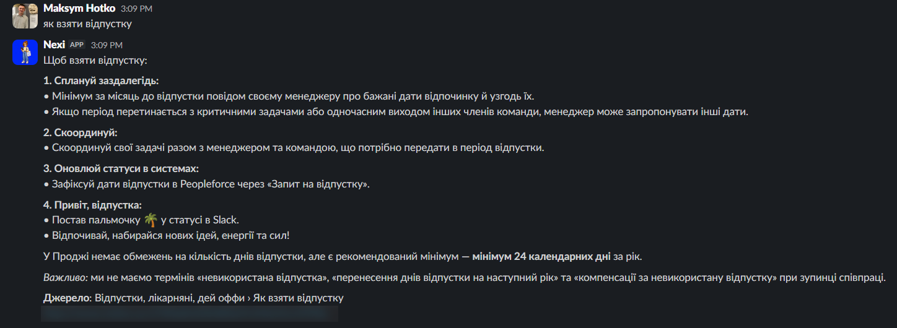
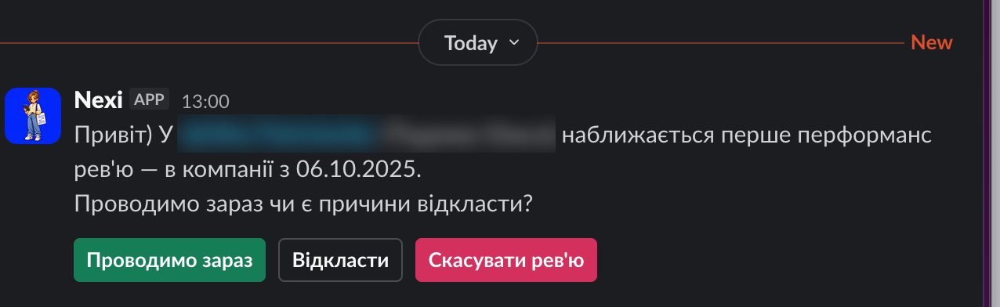
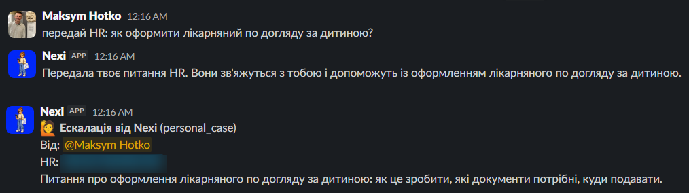
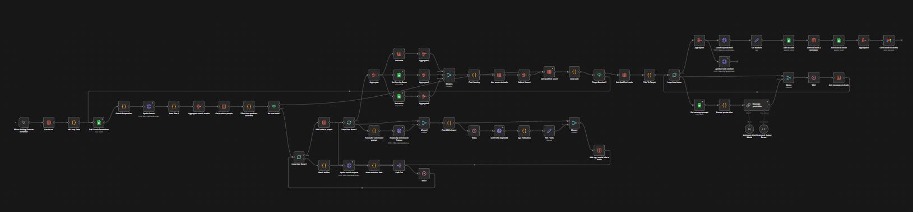
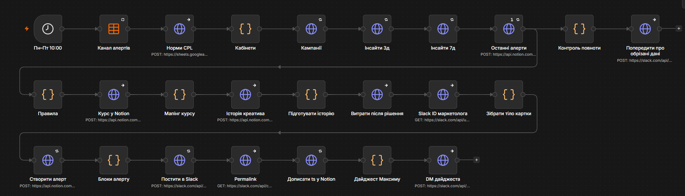
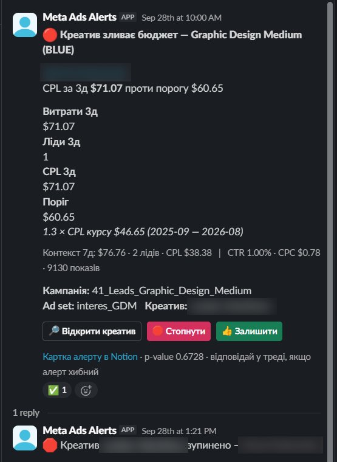
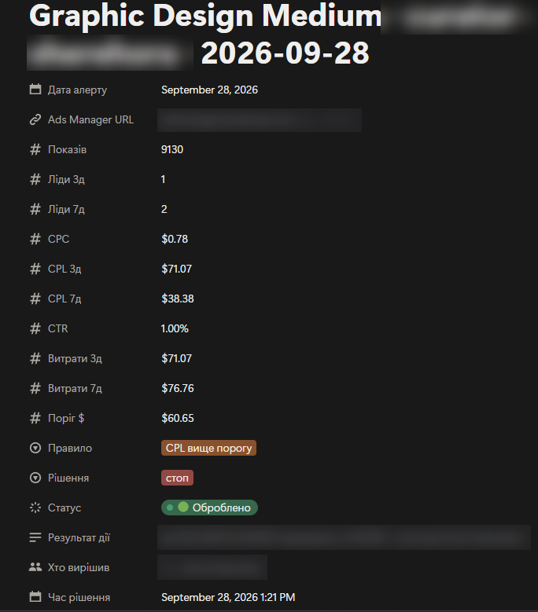
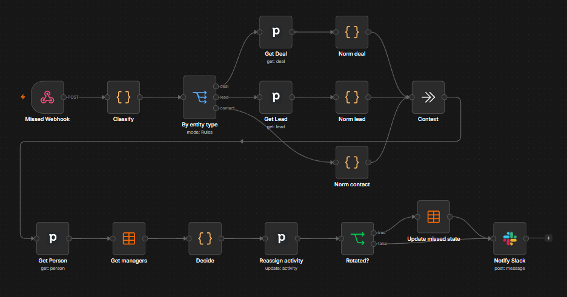

HR answered the same policy questions every day, and performance reviews ran on manual reminders.
What I built
A Python Slack bot with an LLM agent that uses tools.
It answers policy and role questions from 165 pages, finds colleagues and their contacts (synced from PeopleForce), shows who is on vacation, runs performance reviews, reminds leads about birthdays and work anniversaries, and hands complex cases to HR.
Separate prod and dev, tests before every deploy, automatic rollback, weekly quality metrics.
HR was the client; I built the code and infrastructure.
Flow
Employee question in Slack→Agent→Tools (policies and roles, people directory, vacations, reviews, reminders)→Answer, or escalation to HR
Result
Live for the whole company, about 105 employees. Policy search finds the right page in the top 12 results in 93% of test cases. 313 automated tests.

Policy question, answered with source

Performance review: the lead decides in one click

Escalation: the person asks, HR gets a structured card
PythonSlack APILLM tool callingembeddingsNotion APIPeopleForce API
02
AI quality review for sales calls
Problem
A sales lead could review about 20 calls per rep a month, so most calls never got feedback.
What I built
A Python service on Cloud Run splits stereo channels and transcribes each with Gemini, so the speaker is always known.
A quality gate (Claude Haiku) drops calls that cannot be scored.
Claude scores each call on 23 criteria; results go to Notion and a weekly Slack digest per manager.
Prompts live in Git. Prompt Lab tests rubric changes on human-labelled calls before deploy; weekly alerts flag drift.
The client needed qualified leads in narrow segments, each with a personal first message, and wanted to change targeting and wording themselves, without a developer.
What I built
A Google Sheet controls everything: industries, titles, company sizes, locations, lead target, scoring weights, prompts.
n8n searches Apollo, skips leads from earlier runs and enriches the rest with Apollo, LinkedIn and Perplexity.
Each lead is scored against three buyer personas; the run continues until the target is reached.
Claude drafts a personal message per lead; results land in a review sheet and in Apollo.
Separate workflows test prompt changes on a fixed lead sample.
Flow
Control sheet→Apollo search→Skip known leads→Enrichment (Apollo, LinkedIn, Perplexity)→Persona scoring→Repeat until target reached→Claude message drafts→Review sheet + Apollo contacts
Side loopPrompt edits in sheet→Test run on a fixed lead sample
100–1,000
qualified leads per run, set by the client
3
data sources (Apollo, LinkedIn, Perplexity)
0
code changes to retarget a search
Result
The client's team changes targeting, scoring and messaging in a spreadsheet and gets a list of 100 to 1,000 qualified leads per run, as they choose, with drafted messages ready for review, without touching the workflow.

n8n canvas: lead-generation pipeline
n8nApollo APILinkedIn data APIPerplexity APIClaudeGoogle SheetsGmail
Problem
Weak Meta Ads creatives kept spending for days before anyone noticed. One threshold per ad account missed cheap creatives that drained budget slowly.
What I built
A daily n8n run checks every active creative in two ad accounts.
Each course has its own threshold: 1.3 × its 12-month cost per lead, checked over 3 and 7 days.
The rule was tested on 6 months of history before launch.
Each alert is a Notion card and a Slack message with Stop and Keep buttons, plus reminders and feedback.
Flow
Meta Ads data→Per-course rules→Notion card + Slack buttons→Marketer stops or keeps→Feedback→Rule tuning
Result
In the first month, about $1,600 of spend was pulled from weak creatives. Net of the leads those creatives still brought, that is $650–850 saved.

n8n canvas: daily creative check

Slack alert with Stop / Keep

Matching Notion card
n8nMeta Marketing APIGoogle SheetsNotionSlack
Problem
New deals, consultation requests and missed calls had to reach the right sales rep fast, across two teams, many courses, different shifts and days off. Before automation they were routed by hand.
What I built
Four n8n workflows on one core: a rep table synced from the sales team's Google Sheet.
Each lead goes to the next free rep in the right team, within working hours.
The sales lead turns reps on or off in the sheet; a course exception is one row.
The rep becomes the owner in Pipedrive and gets a Slack message.
Flow
New deal / consultation / missed call→Rules (team, course exceptions, working hours)→Next rep in rotation→Owner in Pipedrive + Slack message
Side loopSales team sheet→Sync→Rep table
3×
faster response to new leads
3
lead types on one shared core
2
sales teams
Result
Manual routing is gone and response to new leads is 3× faster. A new rep or a course exception is one row in a table, not a code change.

n8n canvas: missed-call routing
n8nPipedrive APIn8n Data TablesGoogle SheetsSlack
Also built
Smaller projects
Zapier to n8n migration
143 per-course Zaps for course applications replaced by four n8n workflows around one sheet. Course managers connect new forms themselves, and email threads attach to Pipedrive deals automatically.
Mentor matching
A Slack bot that shortlists mentors for a mentee's free-text request from ~560 active mentors, with reasons and profile links. Support spends 2 minutes per request instead of 7–15, about an hour a day saved. It is the same pattern as candidate sourcing: structured profiles matched by an LLM against a brief.
Telegram anti-spam
An LLM classifier for community chats. On a 100-message test it caught 14 of 18 spam messages (5 before) with 0 false positives.
Plus 50+ other automations, from single integrations to multi-workflow systems.
How I work
Four principles
01
Start from real pain.
I work from what hurts a team, not from what would be cool, and do first what gives the most for the least time.
02
Fix the process first.
Automating a messy process only speeds up the mess. I clean up the data and agree on one way of working, then automate.
03
Define success before building.
Every solution starts with criteria that show whether it worked.
04
Logging, documentation and error handling by default.
When something breaks, the team knows first, and anyone can fix it from the docs.
Stack
Tools I work with
AI
ClaudeClaude CodeMCPOpenAIGeminiPerplexity
Automation
n8nMakeZapierwebhooksHTTP/REST APIs
Code
PythonJavaScriptGoogle Apps ScriptSQL/BigQueryFastAPIDockerCloud Run